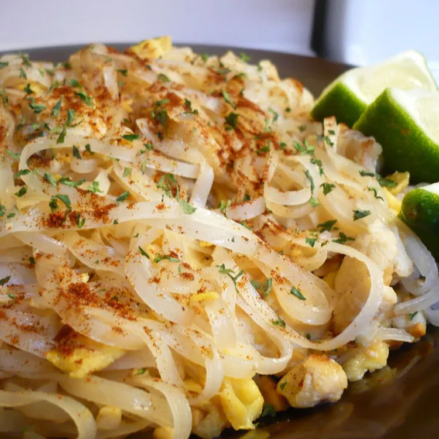

Pad Thai

Description
Pad Thai is a popular Thai stir-fry dish made with rice noodles, sautéed with eggs, tofu or shrimp, and tossed in a sweet-savory tamarind sauce. It's typically topped with crushed peanuts, fresh lime, and bean sprouts for a burst of texture and flavor.
This versatile dish is quick to make and easy to customize with your choice of protein and spice level. Whether served as a weeknight dinner or a flavorful lunch, Pad Thai is a delicious balance of sweet, salty, sour, and spicy.
Ingredients
- 12 ounces dried rice noodles
- ½ cup white sugar
- ½ cup distilled white vinegar
- ¼ cup fish sauce
- 2 tablespoons tamarind paste
- 2 tablespoons vegetable oil, divided
- 2 boneless, skinless chicken breast halves, sliced into thin strips
- 1 ½ teaspoons garlic, minced1 ½ teaspoons garlic, minced
- 4 large eggs, beaten
- 1 ½ tablespoons white sugar
- 1 ½ teaspoons salt
- 1 cup coarsely ground peanuts
- 2 cups bean sprouts
- ½ cup chopped fresh chives
- 1 tablespoon paprika, or to taste
- 1 medium lime, cut into wedge
Instructions
- Place rice noodles into a large bowl and cover with several inches of room temperature water; let soak for 30 to 60 minutes. Drain.
- Whisk 1/2 cup sugar, vinegar, fish sauce, and tamarind paste together in a saucepan over medium heat. Bring to a simmer, then remove from the heat.
- Heat 1 tablespoon oil in a skillet over medium-high heat. Add chicken; cook and stir until chicken is no longer pink in the center and the juices run clear, 5 to 7 minutes. Remove from the heat.
- Heat remaining 1 tablespoon oil in a large skillet or wok over medium-high heat. Add garlic and cook until fragrant, about 1 minute. Stir in eggs; scramble until eggs are nearly cooked through, about 2 minutes. Add chicken and rice noodles and stir until well combined.
- Stir in tamarind mixture, 1 1/2 tablespoons sugar, and salt; cook until noodles are tender, 3 to 5 minutes. Stir in peanuts and cook until heated through, 1 to 2 minutes. Garnish with bean sprouts, chives, and paprika; serve with lime wedges.
- Serve and enjoy!
Go back to the home page to see more recipes!